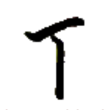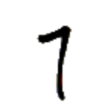
ウㇳ⤴
【下】
[連体詞]
次の
[名詞]
〔単独では稀〕下、後
下行
ウㇳ⤴モㇰ→
【下行】
[動詞]
落ちる、降る、下る
草手下行於秋
コㇳ·ホㇷ゚→ウㇳ⤴モㇰ→イェ·カㇳ⤴
【草手下行於秋】
葉は秋に落ちる。
下名
ウㇳ⤴ズィン→
【下名】
[名詞]
個人名、下の名前
下壊
ウㇳ⤴モㇳ⤴
【下壊】
[動詞]
墜落する
下輩
ウㇳ⤴フオㇰ→
【下輩】
[名詞]
年下のきょうだい
下時
ウㇳ⤴カㇰ·
【下時】
[時間詞]
後(のち)に
下女輩
ウㇳ⤴ザー→フオㇰ→
【下女輩】
[名詞]
妹
下男輩
ウㇳ⤴キー→フオㇰ→
【下男輩】
[名詞]
弟
全下
ベゥー→ウㇳ⤴
【全下】
[時間詞]
ついに、やっと
心下
ヒアー→ウㇳ⤴
【心下】
[命令副詞＋後置副詞]
〔二字の間に動詞を挟んで〕どうか～してください
皇下
タㇺ⤴ウㇳ⤴
【皇下】
[名詞]
タヌト（都市名）
此下
カー→ウㇳ⤴
【此下】
[名詞]
コールーシャム、コルシャン（人名）
一下
エゥㇳ⤴ウㇳ⤴
【一下】
[連体詞]
次の
二下
イㇰ⤴ウㇳ⤴
【二下】
[連体詞]
次の次の
一下日
エゥㇳ⤴ウㇳ⤴キアー→
【一下日】
[時間詞]
明日
一下月
エゥㇳ⤴ウㇳ⤴シェㇺ→
【一下月】
[時間詞]
来月
二下日
イㇰ⤴ウㇳ⤴キアー→
【二下日】
[時間詞]
明後日
之下時
ア·ウㇳ⤴カㇰ·
【之下時】
[時間詞]
(～した)後、(～した)時
女下輩
ザー→ウㇳ⤴フオㇰ→
【女下輩】
[名詞]
妹
男下輩
キー→ウㇳ⤴フオㇰ→
【男下輩】
[名詞]
弟
急下行
ザㇺ→ウㇳ⤴モㇰ→
【急下行】
[動詞]
駆け降りる、急降下する
日下行
キアー→ウㇳ⤴モㇰ→
【日下行】
[主語＋動詞]
日が沈む
上下終無
ザウ⤴ウㇳ⤴タ·ムン→
【上下終無】
[構文]
永久に
我上下心我之母父終無
パイ⤴ザウ⤴ウㇳ⤴ヒアー→パイ⤴ア·マㇺ→クアㇰ→タ·ムン→
【我上下心我之母父終無】
私は永久に両親を愛する。
天水下
ズィュㇳ⤴ヌアー⤴ウㇳ⤴
【天水下】
[主語＋動詞]
雨が降る
天水激之下噫
ズィュㇳ⤴ヌアー⤴ガㇰ→ア·ウㇳ⤴ア·
【天水激之下噫】
もうすぐ雨が降るよ。
入水下
リㇳ→ヌアー⤴ウㇳ⤴
【入水下】
[動詞]
沈没する
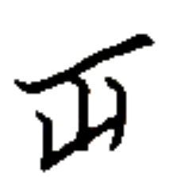
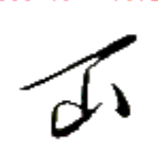
ツオウ→
【片】【刻】
[名詞]
カード、札、駒、牌
[名詞]
ツウォ（長さの単位。およそ 5.54 cm）
[助数詞]
100 分の 1、パーセント、100 分の 1 日
片箱
ツオウ→ブー→
【片箱】
[名詞]
体積の単位（およそ 170 cm³）
片時
ツオウ→カㇰ·
【片時】
[助数詞]
1 日の 100 分の 1
手片
ホㇷ゚→ツオウ→
【手片】
[名詞]
手駒、手札、持ち駒
門片
ギアウ→ツオウ→
【門片】
[名詞]
ビザ
斥片
スアㇳ·ツオウ→
【斥片】
[名詞]
捨て札、捨て駒、捨て牌
積片
ショㇺ→ツオウ→
【積片】
[名詞]
山札
何時片
ナン⤴カㇰ·ツオウ→
【何時片】
[時間詞]
1 日の何パーセントが経過したときに
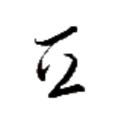
バイ⤴
【糸】
[名詞]
糸
[動詞]
〔稀に〕繋ぐ
糸連
バイ⤴ニエㇰ→
【糸連】
[動詞]
繋ぐ
質糸
チㇳ⤴バイ⤴
【質糸】
[名詞]
チトバイ（地名）
発音注意。
[名詞]
（比喩的に）アイル共和国文化省
文化省および関連機関がチトバイに集中していることから。
全糸平琴
ベゥー→バイ⤴オウ→リアー→
【全糸平琴】
[名詞]
鍵盤の一種
ミー⤴
【引】
[動詞]
引く、引っ張る
引来
ミー⤴ザㇰ⤴
【引来】
[動詞]
引き寄せる
引享魚
ミー⤴ゼゥㇷ゚·ムイ→
【引享魚】
[離合詞]
魚を釣る
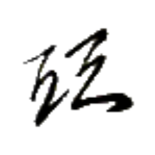
ホン→
【綿】
[名詞]
綿
綿風
ホン→プアー⤴
【綿風】
[名詞]
ホンパ、ホンプア（地名）
真綿之字
プㇳ·ホン→ア·マン→
【真綿之字】
[名詞]
真に軽い音節
パイグ語の文法用語。中調であり末子音を持たないような音節を指し、これらの音節は基本的に機能語として振る舞う。
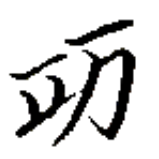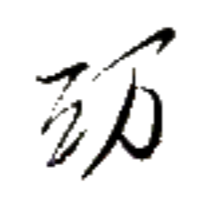
リアー→
【琴】
[名詞]
琴、弦楽器
言琴
チェㇷ゚→リアー→
【言琴】
[名詞]
パイグ人の芸能の一つ。観客には詩などの書かれた紙を持たせ、演奏と共に読むもの。演奏は詩などの一音節ごとの声調に合わせて弾かれることが特徴。
笛琴
ロㇰ→リアー→
【笛琴】
[名詞]
音楽
全糸平琴
ベゥー→バイ⤴オウ→リアー→
【全糸平琴】
[名詞]
鍵盤の一種
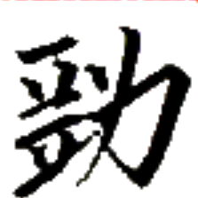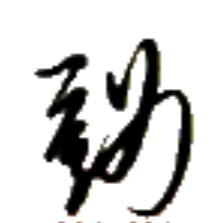
ホウ·
【軟】
[状態動詞]
簡単だ
[状態動詞]
柔らかい
軟論
ホウ·ツイ→
【軟論】
[名詞]
分かりやすい説明
心軟
ヒアー→ホウ·
【心軟】
[状態動詞]
安心だ
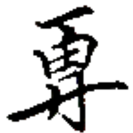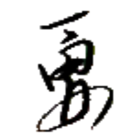
ルー⤴
【新】
[連体詞]
新しい
新星善来
ルー⤴ペゥㇳ⤴カイㇳ·ザㇰ⤴
【新星善来】
[間投詞]
あけましておめでとう
[間投詞]
お誕生日おめでとう
心古行新
ヒアー→ズィアー→モㇰ→ルー⤴
【心古行新】
[成句]
古いことを思いながらも新しいことに挑む、温故知新
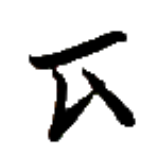
ズィュー⤴
【石】
[名詞]
石
[名詞]
イェーギン（人名）
石筆
ズィュー⤴クアー⤴
【石筆】
[名詞]
鉛筆
謝石
クアイ→ズィュー⤴
【謝石】
[状態動詞]
慇懃だ、高貴だが威張らない
墨石
フオウ⤴ズィュー⤴
【墨石】
[名詞]
石炭
皇石
タㇺ⤴ズィュー⤴
【皇石】
[名詞]
翡翠
蜜石
ズィㇰ⤴ズィュー⤴
【蜜石】
[名詞]
琥珀
蜜石島
ズィㇰ⤴ズィュー⤴ドㇷ゚→
【蜜石島】
[名詞]
シュケープラローシュ島（リナエスト・オルス共和国を構成する島の一つ）
色石筆
ポㇰ·ズィュー⤴クアー⤴
【色石筆】
[名詞]
色鉛筆
闇光石
ホエゥㇳ·アイㇰ⤴ズィュー⤴
【闇光石】
[名詞]
ヘマタイト
白光石
リオㇰ→アイㇰ⤴ズィュー⤴
【白光石】
[名詞]
ダイヤモンド
清王謝石
リン·ヨウ·クアイ→ズィュー⤴
【清王謝石】
[成句]
（リン王が、石につまづいて転んだ際に、自分の身を気にかけるのでなく自身が蹴った石に謝罪したという逸話から）高貴だが威張らない様子。
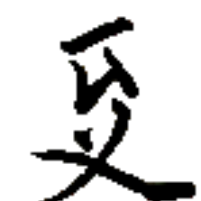
スエゥ·
【俐】
硫俐
クエゥ·スエゥ·
【硫俐】
[名詞]
硫黄
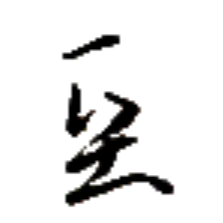
プㇳ·
【慥】
慥之
プㇳ·ア·
【慥之】
[副詞]
〔文章語〕真に、間違いなく、紛れもなく
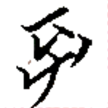
ズイ→
【使】
[動詞]
使う、使用する
[前置詞]
～を使って、～を用いて
普使
ホアイ⤴ズイ→
【普使】
[動詞]
常用する、よく使う
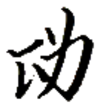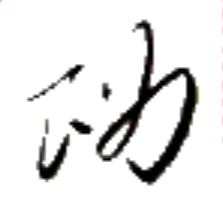
ペゥㇰ→
【硬】
[状態動詞]
難しい
[状態動詞]
強い
硬金
ペゥㇰ→キン⤴
【硬金】
[名詞]
強度の高い合金
硬裁
ペゥㇰ→シュー→
【硬裁】
[状態動詞]
難しい
硬力
ペゥㇰ→ピュ·
【硬力】
[状態動詞]
強い
硬皇力
ペゥㇰ→タㇺ⤴ピュ·
【硬皇力】
[名詞]
強い皇効（セッカイクのルール変種のひとつ）
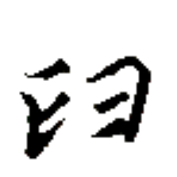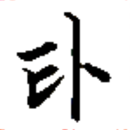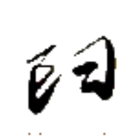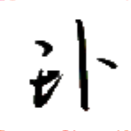
【外】【夘】
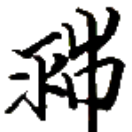
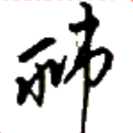
リュ·
【須】【必】
[副詞]
～すべきである
須多
リュ·タウン→
【須多】
[状態動詞]
忙しい
[名詞]
義務、すべきこと
須少
リュ·ホエゥー→
【須少】
[状態動詞]
暇である
須多之
リュ·タウン→ア·
【須多之】
[副詞]
忙しそうに
須少時
リュ·ホエゥー→カㇰ·
【須少時】
[時間詞]
暇な時、余暇、自由時間
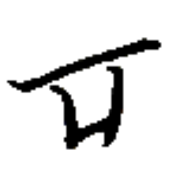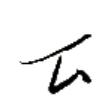
トゥイㇰ→
【味】
[名詞]
味
味善
トゥイㇰ→カイㇳ·
【味善】
[状態動詞]
良い味がする、美味である
味裁
トゥイㇰ→シュー→
【味裁】
[動詞]
（ドングリなどの）渋抜きをする
味識
トゥイㇰ→サン⤴
【味識】
[動詞]
味見する
[名詞]
舌
塩味
クオウ→トゥイㇰ→
【塩味】
[状態動詞]
塩味がする
 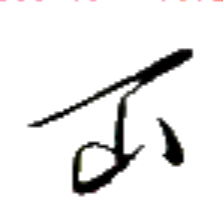
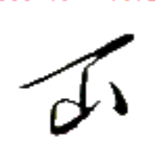
 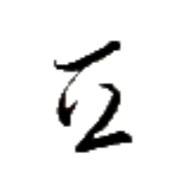
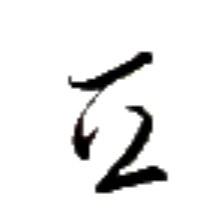


 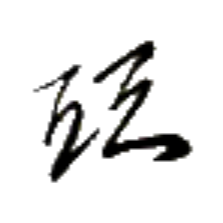
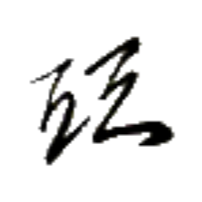


 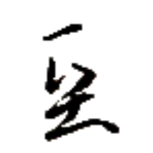
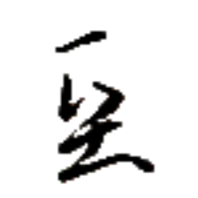

 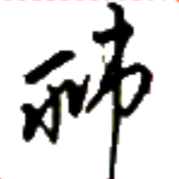
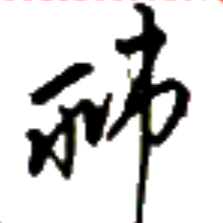